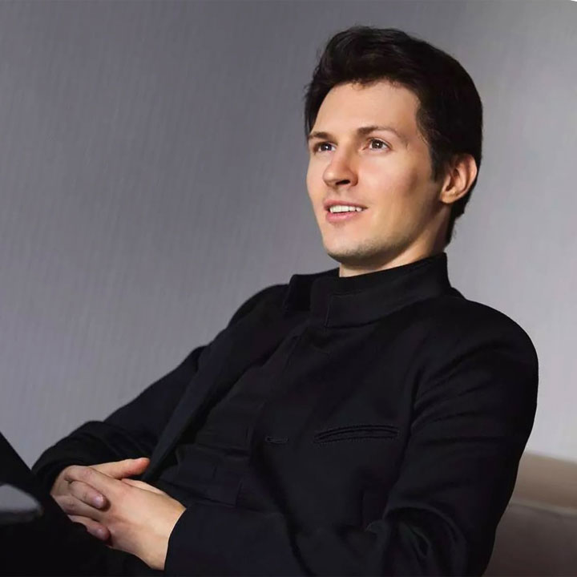

Досье

Русский предприниматель, программист, долларовый миллиардер,таксист.
Один из создателей социальной сети «ВКонтакте» и одноимённой компании, кроссплатформенного
мессенджера Telegram и других проектов. Бывший генеральный директор «ВКонтакте» (2006—2014).
В студенческие годы лауреат стипендий Президента РФ и Правительства РФ, трёхкратный лауреат Потанинской стипендии.